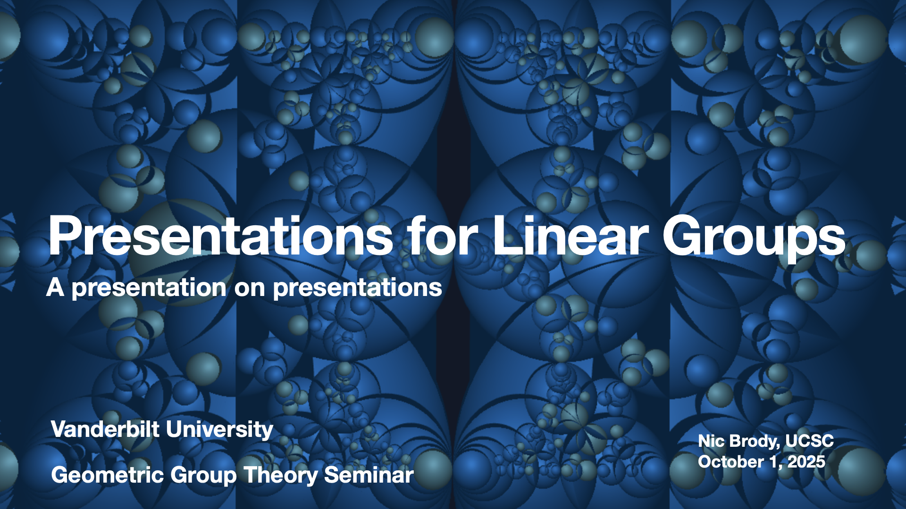
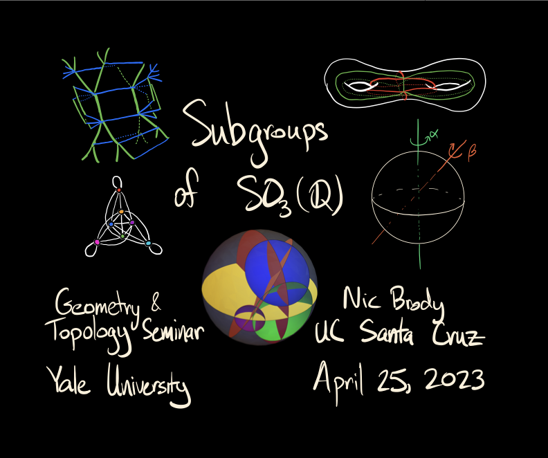
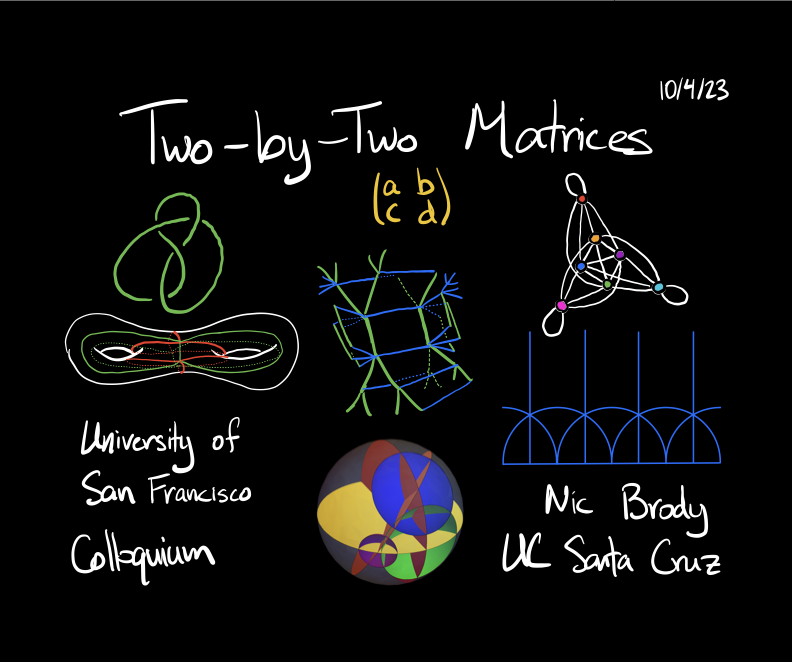

Talks
Lectures & Presentations
Brown Geometry & Topology Seminar
Surface Groups and Products of Trees
Nic Brody, UC Santa Cruz
December 1, 2025
KIAS Virtual Seminar on Geometry and Topology
Surface Groups and Products of Trees
Nic Brody, UC Santa Cruz
January 23, 2026


